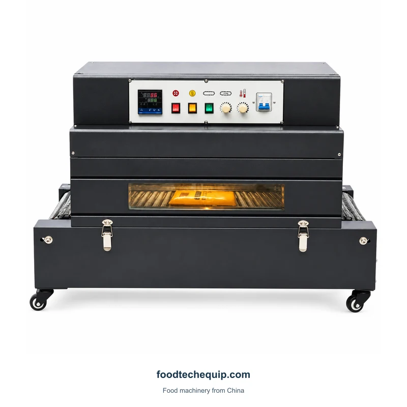

Đóng gói màng co
Máy đóng gói co màng
Thiết bị đóng gói màng co có bộ dẫn màng, băng tải và buồng co màng.
Xem thiết bịSo sánh đường hầm co màng và thiết bị hàn, co màng kết hợp theo kích thước kiện hàng, màng và cách thao tác.
Thiết bị đóng gói màng co có bộ dẫn màng, băng tải và buồng co màng.
Xem thiết bị
Dây chuyền hàn màng và co nhiệt có các phần băng tải và buồng co màng.
Xem thiết bị
Dây chuyền hàn màng và co nhiệt có giá đỡ cuộn màng, băng tải và buồng co màng.
Xem thiết bị
Máy đóng gói dùng buồng co màng, có cửa cho băng tải đi qua, vỏ màu cam và bệ gắn bánh xe.
Xem thiết bị
Máy đóng gói co màng kiểu buồng, có cửa quan sát và đoạn con lăn.
Xem thiết bị
Dây chuyền hàn màng dạng ống và co nhiệt, có giá đỡ cuộn màng và buồng co màng dùng băng tải.
Xem thiết bịThử một từ khóa khác hoặc xoá bộ lọc.
Cho phép các kích thước đầy đủ của sản phẩm hoặc gói, bao gồm khay và hỗ trợ. Xác định xem bạn cần một đường hầm hoặc một kết hợp của lớp phủ và sắp xếp co lại.
Chỉ ra màng dự định và trình bày hoàn thành, sau đó mô tả việc tải, tải và nguồn điện sẵn có cho cấu hình đã chọn.
| Vùng chọn | Tiêu chí so sánh | Để tôi cung cấp gì? |
|---|---|---|
| Đóng kín | Đóng màng trước khi thu nhỏ | Bước đóng kín hiện có hoặc phạm vi yêu cầu |
| Đường hầm | Toàn bộ mục đi qua | Kích thước tổng thể tối đa của bao gói, kể cả khay |
| Chuyển | Tải và rút | Hỗ trợ, độ cao làm việc và truy cập của người điều khiển |
Bọc kín, đóng gói hộp và buộc dây là các nhiệm vụ đóng gói riêng biệt. Hiện gói vào và ra mỗi bước yêu cầu, bao gồm chuyển đổi giữa các trạm.